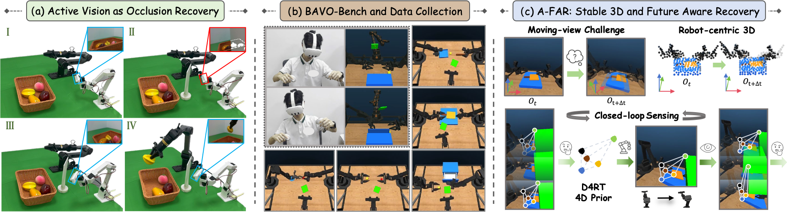
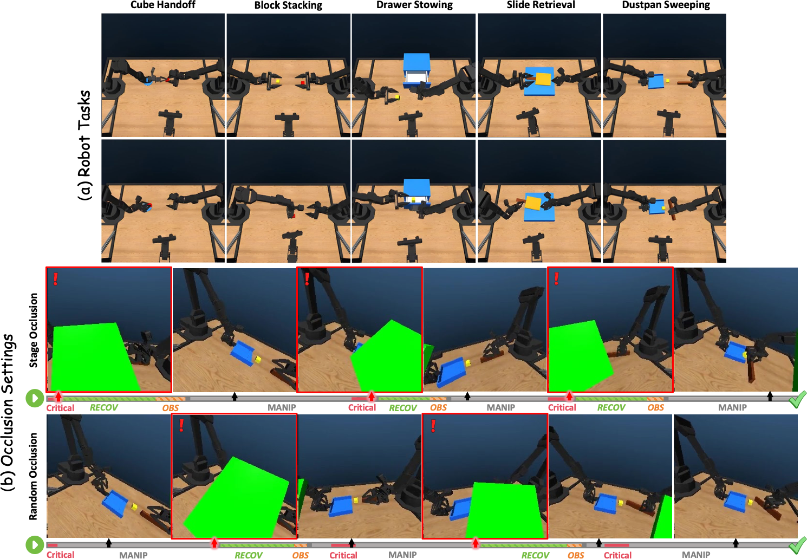
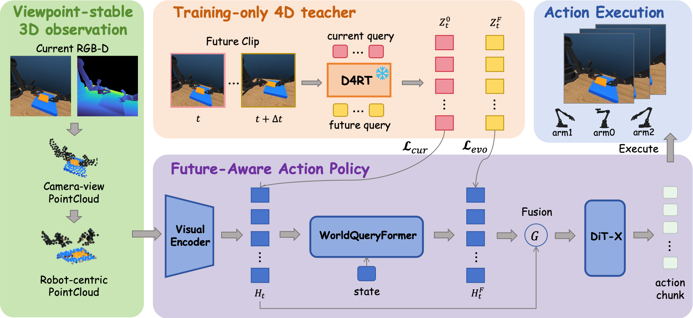
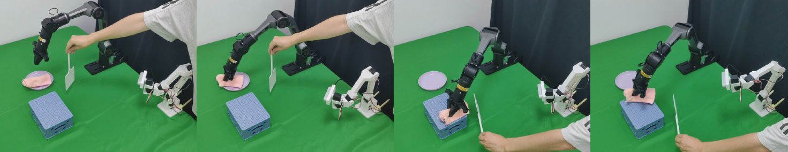

Recovering the View: Benchmarking Physical Active Vision for Occlusion Recovery in Robotic Manipulation

Abstract
Physical active vision allows robots to change their viewpoint when task-relevant observations become unreliable, yet existing manipulation benchmarks provide limited support for studying how policies recover from occlusion during execution. We introduce BAVO-Bench (Bimanual Active Vision under Occlusion), a bimanual active-vision benchmark that systematically controls external visibility through Clean, Stage Occlusion, and Random-time Occlusion conditions, enabling evaluation of both manipulation performance and active visual recovery. Building on this setting, we present A-FAR (Active Future-Aware Recovery), an active-vision policy for joint viewpoint and manipulation control. A-FAR represents moving-camera observations in a unified robot-centric 3D frame and distills relational structure together with its future evolution from a pretrained 4D model, providing the policy with future-aware geometric guidance without requiring future observations at deployment. Experiments across multiple bimanual manipulation tasks show that A-FAR improves robustness to both structured and temporally shifted occlusions while maintaining strong performance under clean observations.
Benchmark

A-FAR

Simulation Rollouts
Explore the five BAVO-Bench tasks under clean observations, stage-aligned occlusion, and randomly timed occlusion. Each video shows the third-person scene and the active-camera view side by side.
Cube Handoff
Handoff a cube between arms and place it on the target plate.
Random-time Occlusion introduces visibility disruptions at sampled times during task execution.
Physical Deployment

Physical Robot Rollouts
Watch three physical robot tasks with or without an externally introduced occlusion.
Rack Cleaning
A physical robot rollout with an externally introduced occlusion.